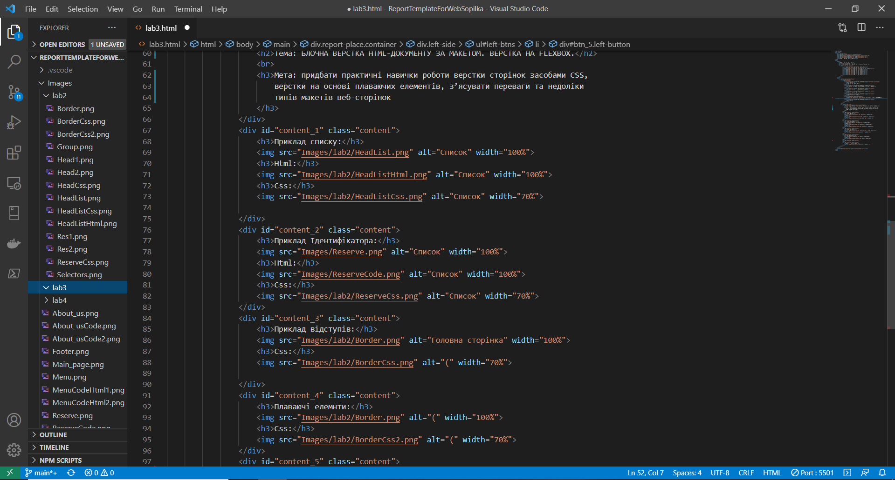
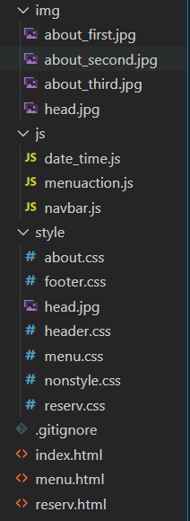
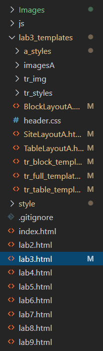
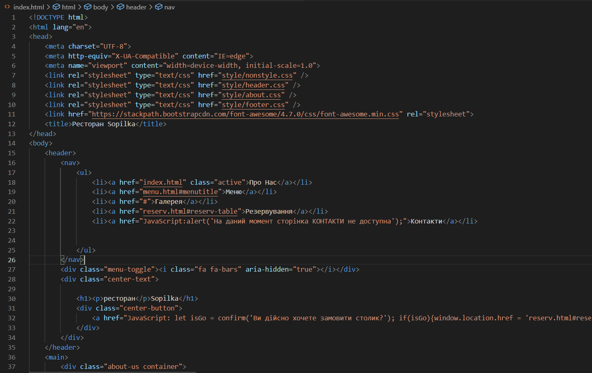
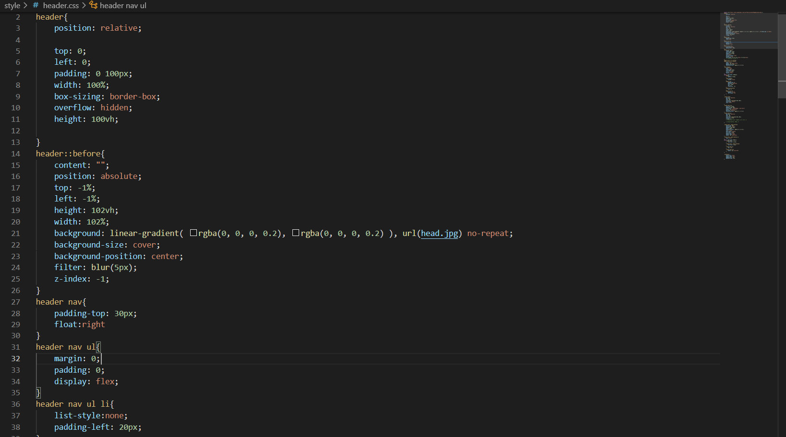

Тема: БЛОЧНА ВЕРСТКА HTML-ДОКУМЕНТУ ЗА МАКЕТОМ. ВЕРСТКА НА FLEXBOX.
Мета: придбати практичні навички роботи верстки сторінок засобами CSS,
верстки на основі плаваючих елементів, з’ясувати переваги та недоліки
типів макетів веб-сторінок
У якості IDE було обрано сучасний, потужний, зручний та красивий редактор тексту Visual Studio Code:

Файлова структура сайту:

Файлова структура звіту:

Головна сторінка сайту:

HTML:

CSS:

У даній роботі було розроблено наш сайт на основі png макета, що був намальований дизайнером.
Для реалізації макета було використано багато методів розміщення блоків. Серед них: flex, block, grid.
Використовувалися різні типи позиціювання: position absolute та relative. Для фіксування розмірів, відстаней та відступів
використовувались міри: відсоток, пікселі та шрифтовий розмір. Другим етапом була верстка заданих макетів за варіантами за допомогою
табличного та Flexbox підходів. Можна стверджувати, є не зручним та застарілим підхідходом. Наприклад при табличній верстці важко підлаштувати
сайт для перегляду на екранах із різною роздільною здатністю.